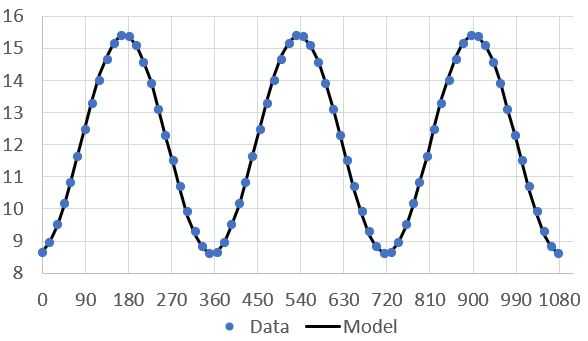

How can we use a sine function to model periodic behavior?
How can we fit the `best` sine curve to discrete, periodic data?
Often, meteorological phenomena exhibit periodicity or near periodicity. We see it in both annual and daily temperature data. The number of hours of sunlight at a given point on the planet is periodic. The spherical shape of a spinning planet that rotates around the sun leads to measurements that are near periodic.
In this section, we investigate the use of a sinusoid to model periodic data.
Subsection2.1.1Sinusoids
What is a sinusoid? Simply put, it is sine curve that has been transformed by shifting or stretching.
The amplitude \(A\) of a sinusoid is half the distance from the maximum height to the minimum height. That is, the amplitude is the distance from the horizontal midline to the vertical peak. The period \(T\) is the length of time before the curve repeats or cycles. The angular frequency \(\omega\) is the number of full cycles that occur in \(2\pi\) (radians). It is related to the period by \(\omega = \frac{T}{2\pi}\text{.}\) The phase shift \(\phi/\omega\) tells us how far the graph is shifted horizontally from the sine graph having period \(T\text{.}\) Finally, the vertical shift \(B\) is how much the graph has been shifted up or down.
A sinusoid.
A general sinusoid of amplitude \(A\text{,}\) angular frequency \(\omega\text{,}\) phase shift \(\phi/\omega\text{,}\) and vertical shift \(B\) is the graph of
\begin{equation*}
f(t) = A\sin(\omega t -\phi)+B.
\end{equation*}
Checkpoint2.1.2.Identifying the Amplitude, Period, Frequency, and Vertical Shift.
For each of the following sinusoids, identify the amplitude \(A\text{,}\) the period \(T\text{,}\) the angular frequency \(\omega\text{,}\) and the vertical shift \(B\text{.}\)
Using \(t=0\) to represent January 1, \(t=15\) to represent January 16, \(t=31\) to represent February 1, and so on, we can place this data in a spreadsheet (DaylightData.xlsx) and plot these values. See Figure 2.1.7.
Figure2.1.7.Left: Ordered pairs \((t,H(t))\) in a spreadsheet. Right: A plot of the ordered pairs \((t,H(t))\text{.}\)
Plotting this data over the course of three years demonstrates just how much this looks like the graph of a sine or cosine function. That is, if \(H(t)\) represents the hours of daylight during day \(t\text{,}\) it seems reasonable to believe that
\begin{equation*}
H(t) = A \sin(\omega t - \phi) + B
\end{equation*}
for some constants \(A\text{,}\)\(B\text{,}\)\(\omega\text{,}\) and \(\phi\text{.}\) These constants are used to modify the amplitude \(A\text{,}\) vertical shift \(B\text{,}\) frequency \(\omega\text{,}\) and phase shift \(\frac{\phi}{\omega}\) of a standard sine function \(\sin(t)\text{.}\)
Figure2.1.8.Three years of the daylight data illustrates its periodic nature.
Perhaps unsurprisingly, it appears that the vertical shift \(B\) for this function appears to be \(B=12\) hours. That is, \(B=12\) appears to be the average height of the data. In fact, for any similar periodic data set, we can determine the vertical shift by simply determining the average of such uniformly spaced data values. That is, for data values \(\left\{ (x_n,y_n): 1 \leq n \leq N\right\}\text{,}\) we can calculate the value of the vertical shift \(B\) as
\begin{equation*}
B = \frac{\sum_{n=1}^N y_n}{N}.
\end{equation*}
Indeed, if we average these data values, we find that \(B=11.99625\text{.}\) For simplicity, we will take \(B=12\text{.}\)
The amplitude of a sinusoid is half of the distance from peak to trough. Seeing the middle of the data is at a height of 12, we can eyeball the amplitude \(A\) as being roughly \(3.5\) hours. A more quantitative approach would be to calculate half the difference of the maximum \(y\)-value and the minimum \(y\)-value in the data. In this case, we get
\begin{equation*}
A \approx \frac{15.4-8.6}{2} = 3.4.
\end{equation*}
This is roughly what we eyeballed. However, we know well that the longest and shortest days of the year, the summer and winter solstices, are not represented in the data. So this is clearly only an estimate. In the next section, we will see how we can use all of the data to provide an improved estimate of the amplitude. For now, we will simply take \(A=3.4\) hours.
The period of the natural sine and cosine functions, \(\sin(t)\) and \(\cos(t)\text{,}\) is \(T=2\pi\text{.}\) That is, these functions repeat themselves on every interval of length \(2\pi\text{.}\) The frequency \(\omega\) of a sinusoid is thus given by \(\omega = \frac{2\pi}{T}\) where \(T\) is the period. For the daylight data, it is clear that our function \(H(t)\) has period \(T = 365\) days. From this, we calculate the frequency to be \(\omega = \frac{2\pi}{365}\text{.}\)
Does \(H(t) = 3.4\sin \left( \frac{2\pi}{365}t \right) + 12\) fit the data fairly well? It has the right amplitude, the right frequency and period, and the right vertical shift. However, if we plot this model against the original data (Figure 2.1.9), it is obviously ``out of phase". That is, a horizontal shift is needed to align our model with the data.
Figure2.1.9.The daylight data compared to the model \(H(t) = 3.4\sin \left( \frac{2\pi}{365}t \right) + 12\) appears to be out of phase.
How do we determine the horizontal shift needed for the model to better match the data? One way would be to compare where (at what day \(t\)) the maximum of both the data and the model occur. In the case of the data, we all know the longest day of the year occurs at the summer solstice in June which coincides with \(t \approx 171\text{.}\) On the other hand, the function \(H(t) = 3.4\sin \left( \frac{2\pi}{365}t \right) + 12\) has a maximum value occurring when \(\frac{2\pi}{365}t = \frac{\pi}{2}\text{.}\) Solving for \(t\) gives \(t = \frac{365}{4} = 91.25\text{.}\) To adjust our model so that the peak occurs at \(t=171\) days rather than \(t=91.25\) days requires a horizontal (phase) shift to the right of \(t=171-91.25 = 79.75\) days. To do this, we replace the variable \(t\) with \(t-79.75\text{:}\)
From this, we see that \(\phi = \frac{159.5\pi}{365}\) with phase shift \(\frac{\phi}{\omega} = 79.75\) days.

Figure2.1.10.The daylight data compared to our model \(H(t) = 3.4\sin \left( \frac{2\pi}{365}t-\frac{159.5\pi}{365} \right) + 12\) that now includes a phase shift.
Checkpoint2.1.11.Calculating Daylight Model Parameters Using a Spreadsheet.
Parameters for amplitude \(A\) and vertical shift \(B\) can be calculated using given data found in a spreadsheet. In addition, a sinusoidal model
\begin{equation*}
A \sin(\omega t - \phi) + B
\end{equation*}
can be plotted against the original data for visual confirmation of reasonable parameter choices yielding a best fit.
For the daylight data found in Example 2.1.5 (DaylightData.xlsx) we compute the vertical shift \(B\) by determining the average of the values of daylight found in one period of column B. Since there are 24 values in one period of this data, we use the formula =SUM(B2:B25)/24 or =AVERAGE(B2:B25) to complete this task. The daylight data in the spreadsheet returns a value of 11.99625 (see cell B75). To compute the amplitude \(A\) from the data, we calculate half the distance from the maximum data value and the minimum data value. The formula =((MAX(B2:B25)-MIN(B2:B25))/2 (as found in cell B76) does this task.
To compare our calculated model to the data numerically and visually, we construct a column of values holding values of the model at the given times \(t\text{.}\) For the daylight data, we calculate values for the model in column C by using the formula =$B$75 + $B$76*SIN(2*PI()/365*(A2-79.75)) in cell C2 and copying that formula down column C. The absolute references of $B$75 and $B$76 are simply references to cells that hold our calculated values of the vertical shift \(B=11.99625\) and \(A=3.4\) respectively. Figure 2.1.10 is then created using columns A, B, and C from the spreadsheet.
Example2.1.12.Average High Temperature in Fargo.
The monthly average high temperature (in \(^{\circ}F\)) in Fargo, ND is another example of a periodic data set. We will use a spreadsheet to determine a sinusoidal model \(H(t) = A\sin(\omega t - \phi)+B\) for this data. Note: Month \(t=0\) corresponds to January.
Figure2.1.13.Left: High temperature by month in a tabular format in a spreadsheet. Right: A plot of the average monthly high temperature in Fargo, ND.
The average of these 12 data values is \(B = 52.5^{\circ}F\text{.}\) Half of the difference of the maximum and minimum average temperatures is \(A=32.5^{\circ}F\text{.}\) The period in this example is \(T=12\) so that the frequency is \(\omega = \frac{2\pi}{12} = \frac{\pi}{6}\text{.}\) The model
has a maximum when \(\frac{\pi}{6}t = \frac{\pi}{2}\) or \(t=3\) months. Since the data has a maximum at \(t=6\) months, our phase shift \(\frac{\phi}{\omega} = 6-3 = 3\) (e.g. \(\phi = 3\left(\frac{\pi}{6}\right) = \frac{\pi}{2}\)). This gives a final model of
Figure2.1.14.The Fargo high temperature data compared to our model \(H(t) = 32.5\sin \left( \frac{\pi}{6}t-\frac{\pi}{2} \right) + 52.5\text{.}\)
Note that we could have modeled the Fargo high temperature data in Example 2.1.12 using a cosine function just as well. That is, rather than using a sinusoid of the form \(H(t) = A\sin(\omega t - \phi) + B\text{,}\) we could employ one of the form
\begin{equation*}
H_2(t) = A_2\cos(\omega_2 t - \phi_2) + B_2
\end{equation*}
for some constants \(A_2, B_2, \omega_2\text{,}\) and \(\phi_2\text{.}\) This is because the sine and cosine functions are the same function when horizontally shifted, i.e. \(\sin(t) = \cos(t-\pi/2)\text{.}\)
Figure2.1.15.The graph of \(\cos(t)\) is just a horizontal shift of the graph of \(\sin(t)\text{.}\)
That is, our sinusoid is now written as a linear combination of \(\sin(\omega t)\text{,}\)\(\cos(\omega t)\text{,}\) and a constant (which can be thought of as \(12\cos(0t)\)).
Reversing the process found in Example 2.1.16 is also possible. That is, any function written in the form
can also be written in the form \(A\sin(\omega t - \phi) + B\) or \(A_2\cos(\omega_2 t - \phi_2) + B_2\) and vice-versa. We now use this fact to discover another method for determining the equation of the best sinusoid to fit a set of data.
Subsection2.1.2Least-squares Fit of a Sinusoid
The idea behind linear regression is to find the best line to fit a set of \(N\) ordered pairs \(\left\{ (t_n, y_n): 1 \leq n \leq N \right\}\text{.}\) That is, we seek to find optimal values of \(a_0\) and \(a_1\) so that
\begin{equation*}
a_0\cdot 1 + a_1 \cdot t
\end{equation*}
best fits the data (in the sense of minimizing the `distance` from the line to the values in the data set. That is, we determine constants \(a_0\) and \(a_1\) so that
The solution to this system of equations gives the values of \(a_0\) and \(a_1\) for the best line \(a_0 + a_1t\) fitting the data.
Suppose rather than nearly linear data, we have nearly periodic data. Rather than using linear regression to fit the best line \(y=a_0 + a_1t\) to the data, we will fit a model of the form
As in linear regression, a linear system of equations (the so-called normal equations) can be solved to determine optimal values of \(a_0, a_1\text{,}\) and \(b_1\text{.}\) As in (2.2), we can write this as a linear system:
Rather than solve this system for the unknown coefficients \(a_0, a_1\text{,}\) and \(b_1\text{,}\) we examine the special (though quite common) case where there are \(N\) observations equally spaced at intervals of length \(\Delta t\) and with a total length of \(T = (N-1)\Delta t\) (where the period \(T = 2\pi/\omega\) as well). Then, we have
since the average values of the sine and cosine functions over one period are 0. This means that \(\sum \sin(\omega t_n) = \sum \cos(\omega t_n)=0\) in our normal equations (2.4). We can also compute the following three averages:
for the monthly average high temperature in Fargo as first seen in Example 2.1.12. The values of \(a_0, a_1\text{,}\) and \(b_1\) can be determined using (2.6). We find, via a spreadsheet to help with calculation, \(a_0 = 52.5\text{,}\)\(a_1\approx 15.95\text{,}\) and \(b_1 \approx -47.67\text{.}\) The result is similar, but not exactly the same, as we found earlier:
A graph of this model and the original data appear in Figure 2.1.18.
Figure2.1.18.The Fargo high temperature data compared to our model \(H(t) = 52.5 + 15.95\cos \left( \frac{\pi}{6}t \right) - 47.67 \sin \left( \frac{\pi}{6}t \right)\text{.}\)
Exercises2.1.3Exercises
1.Periodic?
2.Is the Table Periodic?
3.Calculate Future Values using the Period.
4.Future Values using Periodic, Discrete Data.
5.Period of Zig-Zag Pattern.
6.Find Expression of Periodic Function Given Parameters.
7.Identify Amplitude, Phase Shift, and Period.
8.Identify Amplitude, Period, and Vertical Shift from Graph.
9.Graph a Sinusoid of Period \(2\pi\).
10.Graph a Sinusoid.
11.Range of Temperatures from a Sinusoid.
12.Modeling Daily Temperature.
13.Fitting Periodic Data using a Sinusoid.
14.Sunless in Seattle.
Seattle receives varying amounts of sun depending on the time of year. We can model the number of hours of sun \(S(t)\) as a sinusoid. Here \(t\) represents the number of months after January. Data for each month is found in Table 2.1.19. Figure 2.1.20 is a graph of the sinusoid \(S(t)\text{.}\)
Table2.1.19.Hours of sun \(t\) months after January in Seattle
Month \(t\)
Hours of Sun
0
69
1
108
2
178
3
207
4
253
5
268
6
312
7
281
8
221
9
142
10
72
11
52
A graph of the number of hours of sun \(t\) months after January in Seattle.
Figure2.1.20.Hours of sun \(t\) months after January in Seattle.
The sinusoid \(S(t)\) modeling the number of hours of sun that Seattle receives \(t\) months after January has the form
for constants \(a_0, a_1, b_1\text{,}\) and \(\omega\text{.}\) Determine the value of the period \(T\) of this sinusoid and the value of the frequency \(\omega\text{.}\)
Use the spreadsheet below to determine the values of \(a_0, a_1,\) and \(b_1\text{.}\)
Another way to write a sinusoid modeling this data would be in the form
\begin{equation*}
S(t) = A\sin(\omega t - \phi) + B
\end{equation*}
for constants \(A, B, \omega\text{,}\) and \(\phi\text{.}\)
In this format, the value of \(B\) is just a vertical shift of \(\sin t\text{.}\) That is, \(B\) is the average of the data. What is this value?
The value of \(A\text{,}\) the amplitude, is half the range of the data. What is this value?
Estimate values for \(\omega\) and the phase shift \(\frac{\phi}{\omega}\text{.}\)
Use a trigonometric identify for \(\sin(\alpha - \beta)\) to compare your answer in (c) to that found in (a). Hint:Your coefficients for sine and cosine should be similar; the constant should be the same.
The values of \(a_0\) and \(a_1\) are similar. The value of \(b_1\) is off since the estimated phase shift is so crude. The shift is likely between 2 and 2.5.
15.Modeling Low Temperatures in Rio.
Average monthly low temperatures in Rio de Janeiro are roughly periodic. We will fit a sinusoid to the data given in Table 2.1.21.
Table2.1.21.Average Monthly Low Temperatures in Rio De Janeiro
Month \(t\)
Average Low Temperature \(L(t)\)
0
75
1
76
2
75
3
73
4
69
5
67
6
66
7
66
8
67
9
70
10
72
11
74
Assume that
\begin{equation*}
L(t) = A \sin(\omega t - \phi) + B
\end{equation*}
for some constants \(A\text{,}\)\(B\text{,}\)\(\omega\text{,}\) and \(\phi\) will be used to model the low temperature (in degrees Fahrenheit) \(t\) months after January.
Determine the value of constant \(B\) (the average low temperature over all months).
Use the data in Table 2.1.21 to estimate the amplitude \(A\) of this sinusoid \(L(t)\text{.}\)
Determine the period \(T\) (in months) for periodic function \(L(t)\text{.}\) Then, determine the frequency \(\omega\text{.}\)
Determine the value of the phase shift \(\frac{\phi}{\omega}\text{.}\) In doing so, write an expression representing a model \(L(t)\) for the low temperature \(t\) months after January in Rio de Janeiro.
Using a spreadsheet to visually verify the reasonableness of your model, superimpose both the data and values for your model each month in a single plot.
Answer.
\(B =\) average of the 12 low temperatures \(\approx 70.83\)
\(\displaystyle A = \frac{max - min}{2} = 5\)
\(T=12\) months; So \(\omega = \frac{2\pi}{12} = \frac{\pi}{6}\)
We compare where the maximum of both the data and the model occur. In the case of the data, we all know the longest day of the year occurs at the summer solstice in Rio in late December which coincides with \(t \approx 11.66\text{.}\) The function \(5\sin\left( \frac{2\pi}{12}t \right) + 70.83\) has a maximum value when \(\frac{2\pi}{12}t = \frac{\pi}{2}\) or \(t=3\text{.}\) To adjust our model so that the peak occurs at \(t=1\) month rather than \(t=3\) months requires a horizontal (phase) shift \(\frac{\phi}{\omega}\) to the left of \(t=2\) months (i.e. \(\frac{\phi}{\omega} = -2\) and \(\phi = -\frac{\pi}{3}\)). To do this, we replace the variable \(t\) with \(t+2\text{:}\)
A graph of our model \(L(t)\) superimposed on the average monthly low temperature data for Rio de Janeiro appears in Figure 2.1.22.
A graph of the average monthly low temperature in Rio de Janeiro against our model function \(L(t)\text{.}\)
Figure2.1.22.A graph of the average monthly low temperature in Rio de Janeiro and our model \(L(t)=5\sin \left( \frac{2\pi}{12}t+\frac{\pi}{3} \right) + 70.83\text{.}\)
16.Modeling Average Monthly Low and High for Saint Cloud, MN.
Average monthly low and high temperatures in Saint Cloud are roughly periodic. In this exercise, we will fit a sinusoid to the data given in the spreadsheet below.
for some constants \(a_0\text{,}\)\(a_1\text{,}\)\(b_1\text{,}\) and \(\omega\) where \(t\) is a variable representing the number of months after January.
Determine the value of constant \(\omega\) (the frequency).
Use the data in the spreadsheet to determine the values \(a_0, a_1,\) and \(b_1\) so that
models the high temperature in Saint Cloud \(t\) months after January.
Use both spreadsheets to visually verify the reasonableness of your models. That is, plot both the data and values calculated from each model together.
Answer.
\(\omega=\frac{2\pi}{12}=\frac{\pi}{6}\) since the period \(T=12\)
A graph of the average low temperature in Saint Cloud against our model \(L(t)\) is found in Figure 2.1.23. A graph of the average high temperature in Saint Cloud against our model \(H(t)\) is found in Figure 2.1.24.
A graph of the average monthly low temperature in Saint Cloud against our model function \(L(t)\text{.}\)
Figure2.1.23.A graph of the average monthly low temperature in Saint Cloud against our model \(L(t)=32.08 -27.27\cos\left(\frac{\pi}{6} t\right) -1.22\sin\left(\frac{\pi}{6} t\right)\text{.}\)
A graph of the average monthly high temperature in Saint Cloud against our model function \(H(t)\text{.}\)
Figure2.1.24.A graph of the average monthly high temperature in Saint Cloud against our model \(H(t)=53.58 -30.55\cos\left(\frac{\pi}{6} t\right) -0.31\sin\left(\frac{\pi}{6} t\right)\text{.}\)